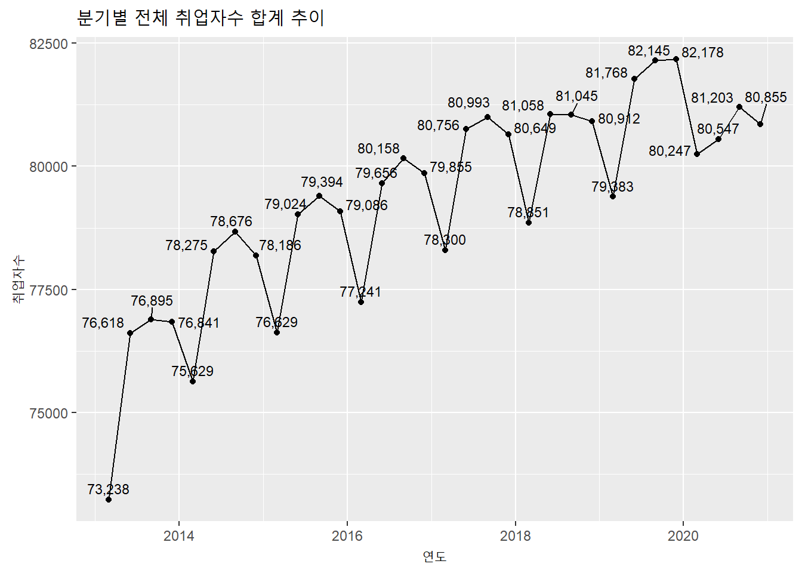
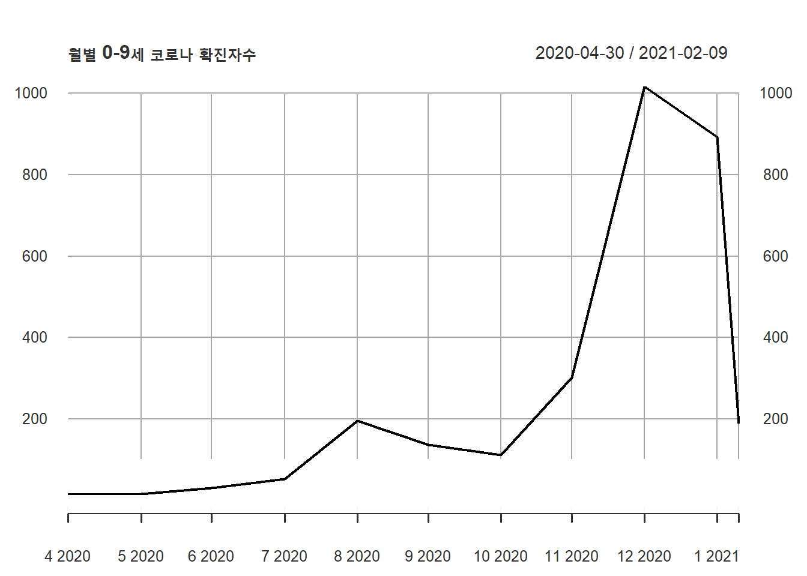
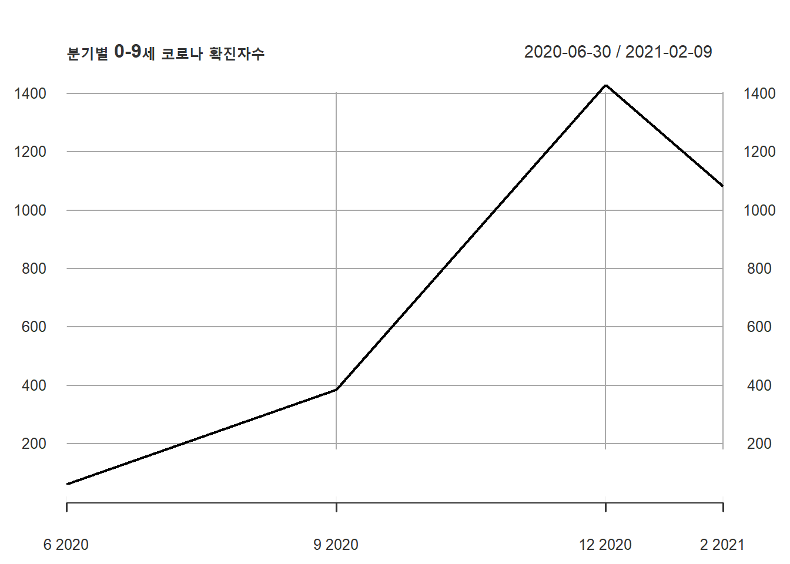

4.8 월별, 분기별, 연별 합계 Plot
- 데이터프레임 :
month(),quarter(),year()함수
데이터 프레임 객체는 dplyr의 group_by()함수와 파이프라인(%>%)을 사용하여 데이터를 그룹핑 한 후 summarise()를 사용하여 합계를 구할 수 있다.
employees %>%
mutate(year = year(time)) %>% ### 시간에서 연도를 추출하여 컬럼 생성
group_by(year) %>% ### 연도컬럼으로 group
summarise(total.year = sum(total),
employees.edu.year = sum(employees.edu)) ### 연도별 합계 산출## # A tibble: 8 x 3
## year total.year employees.edu.year
## <dbl> <int> <int>
## 1 2013 303592 21192
## 2 2014 310766 21957
## 3 2015 314133 22028
## 4 2016 316910 22350
## 5 2017 320698 22886
## 6 2018 321866 22165
## 7 2019 325474 22600
## 8 2020 322852 21570employees %>%
mutate(year = year(time)) %>%
group_by(year) %>%
summarise(total.year = sum(total),
employees.edu.year = sum(employees.edu)) %>%
ggplot(aes(as.factor(year), total.year)) + ### x축에 연도를 as.factor로 변환하지 않으면 연도가 모두 표기되지 않음(정수와 factor의 차이임)
geom_line(aes(group = 1)) +
geom_point() +
geom_text(aes(label = scales::comma(total.year)), vjust = 1) +
### 데이터 포인트마다 취업자수를 표기하는데 scales::comma() 함수로 1000단위 콤마를 찍고 포인트와 겹치기 때문에 vsjut로 위치조정
labs(title = '연도별 전체 취업자수 합계 추이', x = '연도', y = '취업자수')
### plot, x, y 축제목 설정
employees %>%
mutate(year = year(time), qrt = quarter(time)) %>%
group_by(year, qrt) %>%
summarise(total.year = sum(total),
employees.edu.year = sum(employees.edu))## # A tibble: 32 x 4
## # Groups: year [8]
## year qrt total.year employees.edu.year
## <dbl> <int> <int> <int>
## 1 2013 1 73238 5107
## 2 2013 2 76618 5305
## 3 2013 3 76895 5418
## 4 2013 4 76841 5362
## 5 2014 1 75629 5348
## 6 2014 2 78275 5504
## 7 2014 3 78676 5550
## 8 2014 4 78186 5555
## 9 2015 1 76629 5466
## 10 2015 2 79024 5464
## # ... with 22 more rowsemployees %>%
mutate(year = year(time), qrt = quarter(time)) %>%
group_by(year, qrt) %>%
summarise(total.year = sum(total),
employees.edu.year = sum(employees.edu)) %>%
ggplot(aes(x = as.factor(paste0(year, ',', qrt)), y = employees.edu.year)) +
geom_line(aes(group = 1)) +
geom_point() +
ggrepel::geom_text_repel(aes(label = scales::number(employees.edu.year, big.mark = ',', accuracy = 1)), vjust = 1, size = 3) + ### ggrepel::geom_text_repel() 함수로 숫자들이 겹치지 않게 plotting
labs(title = '분기별 교육서비스업 취업자수 합계 추이', x = '연도', y = '취업자수') +
theme(axis.text.x=element_text(angle=90,hjust=1))
covid19 %>%
mutate(year = year(date), month = month(date)) %>%
group_by(year, month) %>%
summarise(`0-9세.month` = sum(`0-9세`))## # A tibble: 11 x 3
## # Groups: year [2]
## year month `0-9세.month`
## <dbl> <dbl> <dbl>
## 1 2020 4 14
## 2 2020 5 16
## 3 2020 6 31
## 4 2020 7 53
## 5 2020 8 196
## 6 2020 9 136
## 7 2020 10 112
## 8 2020 11 301
## 9 2020 12 1016
## 10 2021 1 893
## 11 2021 2 188- 데이터프레임, tsibble : collapse_by() 함수
데이터프레임이나 tsibble 객체는 collapse_by() 함수를 사용할 수 있다. 앞서 설명한 바와 같이 collpase_by 함수를 사용하기 위해서는 tbl_time 객체로 변환이 필요하다.
(employees_tbl_time <- as_tbl_time(employees, index = time) %>%
collapse_by('quarterly') %>%
group_by(time) %>%
summarise(total.quater = sum(total)))## # A time tibble: 32 x 2
## # Index: time
## time total.quater
## <date> <int>
## 1 2013-03-01 73238
## 2 2013-06-01 76618
## 3 2013-09-01 76895
## 4 2013-12-01 76841
## 5 2014-03-01 75629
## 6 2014-06-01 78275
## 7 2014-09-01 78676
## 8 2014-12-01 78186
## 9 2015-03-01 76629
## 10 2015-06-01 79024
## # ... with 22 more rowsemployees_tbl_time %>%
ggplot(aes(time, total.quater)) +
geom_line() +
geom_point() +
ggrepel::geom_text_repel(aes(label = scales::comma(total.quater)), vjust = 1, size = 3) + ### ggrepel::geom_text_repel() 함수로 숫자들이 겹치지 않게 plotting
labs(title = '분기별 전체 취업자수 합계 추이', x = '연도', y = '취업자수')
as_tbl_time(covid19.tsibble, index = date) %>%
collapse_by('monthly') %>%
group_by(date) %>%
summarise(total.1대 = sum(`0-9세`)) %>%
ggplot(aes(as.factor(date), total.1대)) +
geom_line(aes(group = 1)) +
geom_point() +
geom_text(aes(label = scales::comma(total.1대, accuracy = 1)), vjust = 1, size = 3) + ### ggrepel::geom_text_repel() 함수로 숫자들이 겹치지 않게 plotting
labs(title = '월별 0-9세 코로나 확진자수 합계 추이', x = '월', y = '확진자수') +
theme(axis.text.x=element_text(angle=90,hjust=1))
- tsibble : index_by() 함수
tsibble 객체는 데이터프레임 객체와 동일하게 핸들링 할 수 있다. 하지만 tsibble 객체에서만 동작하는 함수인 index_by() 함수를 사용하면 쉽게 구할 수 있다. index_by 함수는 tsibble 객체 생성시 지정한 index 컬럼에서 grouping 하기 위한 새로운 컬럼을 생성하는데 이 컬럼에 grouping 주기를 함수로 명기한다. 여기서 주의해야할 사항은 grouping 함수 앞에 ~를 붙여야 한다는 것과 grouping 함수의 매개변수로 ‘.’을 사용해야 한다는 점이다.’’의 의미는 index 컬럼을 사용한다는 의미이다.
grouping 주기는 다음과 같다.
| 함수명 | 주기 |
|---|---|
| lubridate::year | 연도 주기 |
| yearquarter | 분기 주기 |
| yearmonth | 월 주기 |
| yearweek | 주 주기 |
| as.Date | 일 주기 |
| celling_date, floor_date, round_date | 상세 주기 |
employees.tsibble%>%
index_by(yearqtr = ~ yearquarter(.)) %>%
summarise(sum.qtrly = sum(total)) %>%
head(10)## # A tsibble: 10 x 2 [1Q]
## yearqtr sum.qtrly
## <qtr> <int>
## 1 2013 Q1 73238
## 2 2013 Q2 76618
## 3 2013 Q3 76895
## 4 2013 Q4 76841
## 5 2014 Q1 75629
## 6 2014 Q2 78275
## 7 2014 Q3 78676
## 8 2014 Q4 78186
## 9 2015 Q1 76629
## 10 2015 Q2 79024covid19.tsibble[, c(1,3)]%>%
index_by(yearweek = ~ yearweek(.)) %>%
summarise(sum.weekly = sum(`0-9세`)) %>%
head(10)## # A tsibble: 10 x 2 [1W]
## yearweek sum.weekly
## <week> <dbl>
## 1 2020 W15 4
## 2 2020 W16 8
## 3 2020 W17 3
## 4 2020 W18 -1
## 5 2020 W19 1
## 6 2020 W20 6
## 7 2020 W21 1
## 8 2020 W22 8
## 9 2020 W23 7
## 10 2020 W24 3index_by를 사용할 때 장점은 grouping 기간을 자유자재로 설정할 수 있다는 점이다. 월, 분기, 년과 같이 달력상의 주기 외에 ‘매 4일마다,’ ’매 2달마다’와 같이 주기를 설정할 수 있다.
covid19.tsibble[, c(1,3)]%>%
index_by(twoweek = ~ lubridate::floor_date(., "2 month")) %>%
summarise(sum.2week = sum(`0-9세`)) %>%
head(10)## # A tsibble: 6 x 2 [1D]
## twoweek sum.2week
## <date> <dbl>
## 1 2020-03-01 14
## 2 2020-05-01 47
## 3 2020-07-01 249
## 4 2020-09-01 248
## 5 2020-11-01 1317
## 6 2021-01-01 1081covid19.tsibble[, c(1,3)]%>%
index_by(fourday = ~ lubridate::floor_date(., "4 day")) %>%
summarise(sum.4days = sum(`0-9세`)) %>%
head(10)## # A tsibble: 10 x 2 [1D]
## fourday sum.4days
## <date> <dbl>
## 1 2020-04-09 4
## 2 2020-04-13 5
## 3 2020-04-17 3
## 4 2020-04-21 0
## 5 2020-04-25 2
## 6 2020-04-29 0
## 7 2020-05-01 0
## 8 2020-05-05 1
## 9 2020-05-09 1
## 10 2020-05-13 5- xts : apply 계열 함수
xts 객체의 월별, 분기별, 연별 값을 구하기 위해서 제공하는 함수는 ’apply.’으로 시작하는 함수로 함수에 xts 객체와 적용하고자 하는 함수(sum, mean 등)을 전달하면 값을 산출할 수 있다. apply. 계열 함수는 다음의 5가지가 있다. 산출된 결과는 plot.xts 함수로 간단히 plotting 할 수 있다.
| 함수명 | 설명 |
|---|---|
| apply.daily(xts객체, 함수명) | 일별로 함수를 적용한 결과값 반환 |
| apply.weekly(xts객체, 함수명) | 주별로 함수를 적용한 결과값 반환 |
| apply.monthly(xts객체, 함수명) | 월별로 함수를 적용한 결과값 반환 |
| apply.quarterly(xts객체, 함수명) | 분기별로 함수를 적용한 결과값 반환 |
| apply.yearly(xts객체, 함수명) | 년별로 함수를 적용한 결과값 반환 |
library(xts)
apply.quarterly(employees.xts, sum) %>% head(10)## [,1]
## 2013-03-01 78345
## 2013-06-01 81923
## 2013-09-01 82313
## 2013-12-01 82203
## 2014-03-01 80977
## 2014-06-01 83779
## 2014-09-01 84226
## 2014-12-01 83741
## 2015-03-01 82095
## 2015-06-01 84488apply.yearly(employees.xts, sum) %>% plot.xts()
apply.monthly(covid19.xts[,1], sum) %>% plot.xts(main = '월별 0-9세 코로나 확진자수')
apply.quarterly(covid19.xts[,1], sum) %>% plot.xts(main = '분기별 0-9세 코로나 확진자수')
- ts 객체
ts 객체는 다음장부터 다뤄질 시계열 분석 패키지인 forecast 패키지에서 중요하게 사용되는 객체이다. 하지만 앞선 data.frame 이나 xts 처럼 핸들링이 용이하지 않다. 따라서 데이터 핸들링을 위해서는 data.frame 이나 xts 객체로 변환하여 사용하는 것이 정신 건강에 좋다.